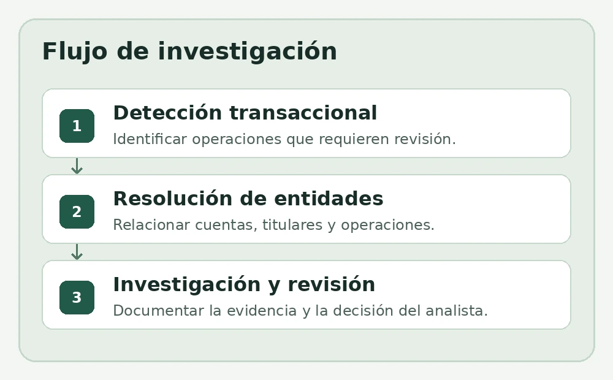

Prevención de lavado
Rastro Financiero
Caso de estudio de prevención de lavado que combina detección transaccional, resolución de identidades e investigación con agentes de IA especializados.

Alcance del proyecto
La parte multiagente prepara y revisa un expediente. Cada agente aporta evidencia o redacta una parte del análisis. Un analista de cumplimiento valida el resultado antes del cierre.
Ver el flujo y sus componentes
- Detección Los movimientos se contrastan con el perfil del cliente, reglas y operaciones similares para priorizar alertas.
- Resolución de entidades La búsqueda por texto y similitud vectorial propone registros que podrían corresponder a la misma entidad. Los vínculos entre cuentas y contrapartes aportan contexto a la revisión.
- Investigación multiagente El agente de triaje reúne movimientos, identidades, relaciones y listas de vigilancia. El analista del caso examina vínculos y patrones temporales, y los subagentes profundizan en pistas concretas.
- Borrador y validación Un agente prepara el borrador del reporte. El control de calidad puede devolverlo para ajustes. La revisión humana determina qué se incorpora al expediente final.
Beneficio potencial para Paraguay
Bancos y cooperativas paraguayas podrían reunir en un solo expediente movimientos que hoy se revisan en distintas fuentes y dar continuidad a un caso cuando cambia el analista.
Implementación prevista
El piloto empezaría con transacciones en guaraníes anonimizadas o sintéticas, identificadores normalizados y tipologías acordadas con cumplimiento. La revisión humana confirmaría las relaciones y las alertas antes de incorporar el flujo a casos reales. Se medirían el tiempo por expediente y las alertas que terminan sin hallazgo.